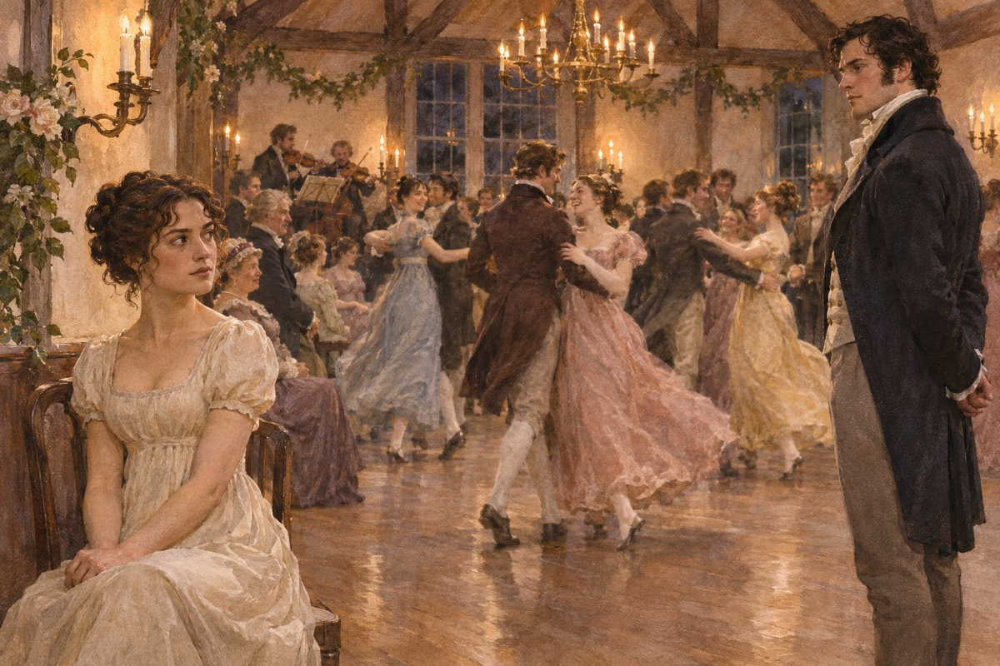
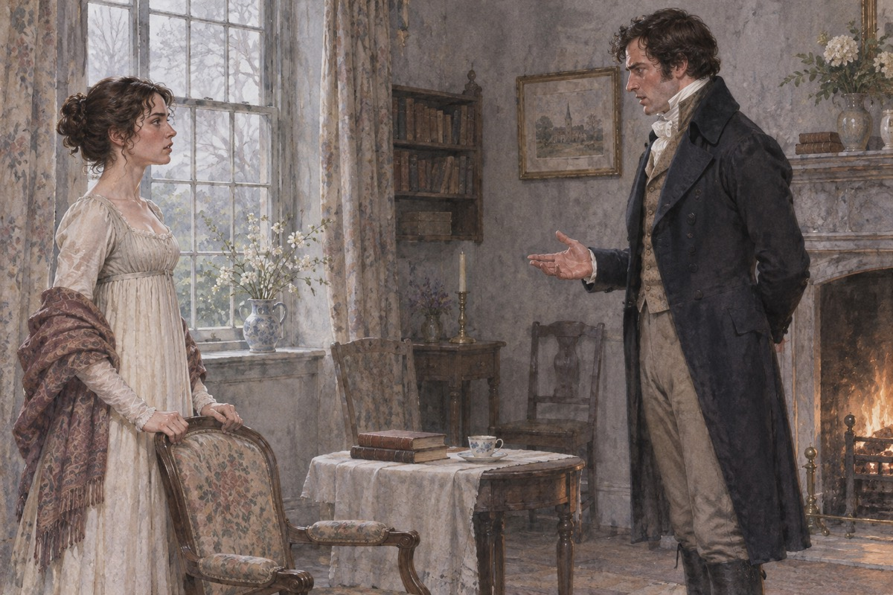

一条真理
班纳特先生有五个女儿，一份每年两千镑的产业，和一个没有儿子的麻烦。产业只能传给男性继承人，也就是说，他死后，这栋房子会落到一个远房表侄手里。他太太每天想的就是一件事：把女儿嫁出去。她说：你难道不想想我们的女儿吗。他说：我不想，我从来没想过。班纳特先生结婚二十年，学会了一件事：不跟太太争。他说：你一开口，我就当我们已经商量过了。他太太说：你这个人没有心。他说：我有一颗，只是不常用。他躲进书房，把门关上，拿起一本书。门外传来太太的声音，他把书翻过一页。
新邻居
一个叫宾利的年轻人租下了尼日斐花园，每年有四五千镑收入，单身未婚。班纳特太太说：这是我们的机会。她托人打听，托人介绍，最后在舞会上见着了。宾利长得好看，脾气也好，一进门就请她跳舞。他带来一个朋友，叫达西，一年有一万镑，站在角落里不说话。舞会上，宾利请简跳了两次。班纳特太太说：这是好兆头。伊丽莎白说：他请每个人都跳了两次。她说：那不一样。伊丽莎白说：哪里不一样。她说：他看她的眼神不一样。这句话，她倒是说对了。
不够漂亮
伊丽莎白坐在旁边，听见宾利劝达西跳舞。达西说：我不跳，除非有合适的舞伴。宾利指着伊丽莎白说：她很不错。达西看了她一眼，说：还可以，但还不够漂亮，打动不了我。他说这话的时候，她就坐在三步之外。她听见了。她没有生气，她把这件事当成一个笑话，讲给朋友听。伊丽莎白听见那句话，转过头，正对上达西的眼睛。她没有躲，也没有笑，只是看着他，看了三秒，然后转回去跟旁边的人说话，声音比刚才大了一点。达西后来一直记得这三秒。他后来说：我那时候才知道，有些人是不能得罪的。

姐姐
简病了，在尼日斐住了几天。伊丽莎白一个人走了三英里去看她，裙子沾满泥，头发被风吹乱。达西看见她走进来，愣了一下。宾利小姐说：她这个样子，真不像个淑女。达西说：她走了三英里，是为了照顾姐姐。他说完，自己也有点意外。宾利小姐说：她这样跑来，像个野人。达西说：她走得很快。宾利小姐说：她的裙子全是泥。达西说：她是为了姐姐。他说完，走到窗边站着。宾利小姐看着他的背影，把手里的针线捏紧了。
韦翰
民兵团来了一个年轻军官，叫韦翰，笑起来很好看，说话很得体。他告诉伊丽莎白：达西的父亲答应给我一个教职，达西却把它给了别人。他说：我一无所有，都是因为他。伊丽莎白听完，觉得这个人又可怜又可爱，觉得达西又傲慢又刻薄。她后来才知道，这个故事是倒着讲的。韦翰说：我不怪他，我只是不明白。他说：他父亲答应过我，可他一死，什么都没了。伊丽莎白说：这太不公平了。他说：我已经习惯了。他低下头，笑了一下。伊丽莎白那天晚上回家，把这件事讲给简听。简说：也许其中有误会。她说：不会的。
柯林斯
班纳特先生的表侄柯林斯来了。这个人要在班纳特先生死后继承这栋房子，所以他觉得自己有责任「给这家人一点补偿」——办法是娶其中一个女儿。他先看上了简，听说简可能订婚了，就转向伊丽莎白。他准备了三个理由：一，牧师应当结婚；二，这样能让他幸福；三，这是凯瑟琳夫人的意思。柯林斯说：我这次来，是想弥补一个不幸的处境。他说：令尊的产业将由我继承，这让我很不安。所以我打算娶一位令爱，作为补偿。班纳特太太说：你真是太好了。伊丽莎白在旁边，把茶喝完了，一句话没说。
拒绝
伊丽莎白说：谢谢你，但我不能嫁给你。柯林斯说：我知道，年轻小姐拒绝第一次求婚是常事，我再说一遍。她说：不必了。他说：我再说一遍，你不答应，我就永远不再提。她说：那我就更该拒绝了。他愣了一下，说：看来你还不懂什么叫体面。她说：我懂，只是不打算照做。柯林斯说：我理解，年轻小姐的拒绝是一种礼貌。他说：我再说一遍。伊丽莎白说：不必了。他说：那么我第三次。她说：柯林斯先生，我是一个有理性的人，我说的话是算数的。他说：女人拒绝男人的求婚，是希望男人再求一次。她说：那我不是女人。
夏洛特
三天后，柯林斯跟夏洛特·卢卡斯订婚了。夏洛特二十七岁，长得不美，家里不富，一辈子最怕的就是变成一个老姑娘。她跟伊丽莎白说：我不是在谈恋爱，我是在安排生活。伊丽莎白说：你不能这样。她说：我能。她说：你有一天会明白的。伊丽莎白那天晚上没睡着。夏洛特说：我不是浪漫的人。她说：我已经二十七岁，没有财产，长得也平常。她说：我要一个家。伊丽莎白说：可你不爱他。她说：我知道。她说：爱情是好的，可房子更好。伊丽莎白看着她，忽然觉得这个人是她认识的人里最清醒的一个，也是最让她难过的。
搬走
宾利忽然搬走了，连招呼都没打。简收到一封短信，说他们要回伦敦过冬。简把信读了三遍，说：他一定会回来的。伊丽莎白说：他不会。她后来才知道，是达西劝他走的，理由是简不够热情。这件事让伊丽莎白更恨达西了。宾利小姐写信来说：我们都很想念简，希望她早日康复。信末附了一句：我哥哥最近很忙。简把信读了三遍，说：她是在暗示。伊丽莎白说：她是在明示。简说：也许是我们多心。伊丽莎白说：你从来不多心。她说：所以我才活得比你舒服。
牧师住宅
伊丽莎白去看夏洛特。夏洛特把家安排得很好：书房朝北，客厅朝南，柯林斯先生在花园里干活的时候，她让他到最远的那一头去。伊丽莎白住了六周，看见了一种她不能理解的生活：不吵架，也不亲密，各过各的。她走的时候，夏洛特说：你看，我过得还行。夏洛特说：你要学我，把一天安排满。她说：早上我做家务，中午我陪他说话，下午我在自己的房间。她说：他喜欢花园，我让他去最远的那一头。伊丽莎白说：你快乐吗。她说：我安稳。她说这话的时候在笑，笑得很平静。
凯瑟琳夫人
罗新斯的主人是凯瑟琳·德·包尔夫人，达西的姨妈。她请她们去吃饭，问了伊丽莎白一堆问题：你会弹琴吗。你画过画吗。你妹妹们都学什么。伊丽莎白一一回答，答得不卑不亢。夫人说：你倒是有主见。伊丽莎白说：是。夫人说：我不喜欢有主见的年轻女人。凯瑟琳夫人说：你有几个姐妹。伊丽莎白说：四个。她说：都出嫁了吗。伊丽莎白说：没有。她说：那就是四个麻烦。伊丽莎白说：我不觉得。她说：你还年轻。她说：我年轻的时候，也不觉得。她说这话的时候，语气忽然软了一下。
第一次求婚
达西来了。他在客厅里坐了很久，忽然站起来，说：我一直在挣扎，但我必须告诉你，我爱你，我要娶你。他说完，脸上没有一点高兴的样子，像是在宣布一个坏消息。伊丽莎白说：我不明白你为什么要把这件事说得像在道歉。他说：因为我家世比你高。她说：那你就更不该来。达西说：我知道你不喜欢我。他说：我一直在跟自己说，不要来，可我还是来了。伊丽莎白说：那你为什么要说得这么勉强。他说：因为我知道你不会答应。她说：你既然知道，为什么还问。他说：因为我不问，就永远不知道。她说：那我现在告诉你。

一封信
第二天早上，达西在花园的小路上等她，递给她一封信，然后走了。信里写了两件事：第一，他拆散宾利和简，是因为他看不出简爱宾利；第二，韦翰说的全是假话——他拿了达西父亲留给他的钱，挥霍光了，还想娶达西十五岁的妹妹。伊丽莎白把信读了三遍，读到最后，脸上发烫。信写得很长，字很小，没有一句多余的话。他说：关于宾利先生，我承认是我劝他走的。他说：我看不出你姐姐对他有特别的感情。他说：关于韦翰先生，我必须告诉你一些事。伊丽莎白读到第二页，手开始抖。她读到第四页，坐在了路边的石头上。
重新看一遍
她一个人走到村外的路上，把信又读了一遍。她想起韦翰在舞会上说的每一句话，想起他说这些话的时候有多自然。她想起自己说过的那句：达西先生是世界上最坏的人。她站在路边，说了一句：我真是个傻瓜。她说得很轻，但是真的。她想：我为什么会信他。因为他说得好听，因为他长得好看，因为他一开口就说自己受了委屈。她想：我为什么会恨达西。因为他不会说话，因为他站在那里不动，因为他说我「不够漂亮」。她坐了很久。她后来跟简说：那天我把自己看清楚了。
一座房子
伊丽莎白跟舅父母去德比郡旅行，路过彭伯里——达西的家。她听说他不在，才敢进去。房子很大，摆设很雅，管家老太太说：我从没见过比他更好的主人。伊丽莎白听着，觉得这些话跟她的印象对不上。她走到画廊，站在他的画像前面，站了很久。管家说：小姐要是想看房子，我可以带路。她说：你们主人不在吗。管家说：他明天才回来。她说：那就好。她跟着管家走了一圈，看了客厅、餐厅、画廊、琴房。她在琴房停下来，说：这架琴是谁弹的。管家说：小姐弹。她说：他现在还弹吗。管家说：他很少弹了。
出处 · 第 43 章 彭伯里
遇见
他从花园那头走过来，满身尘土，刚从马上下来。两个人都愣住了。他说：小姐，你来了。她说：我以为你不在。他说：我提前回来了。他说完，站在那里，不知道该说什么。她也不知道。后来她跟姐姐说：那几分钟，是我这辈子最难受的几分钟。他说：小姐，你的舅父母呢。她说：在那边。他说：我可以见他们吗。她说：可以。他说：那我先去换件衣服。他说完就走了，走了几步又回头，说：你来了，我很高兴。这句话他说得很快，像怕自己反悔。
变了一个人
他请她见他的妹妹，说话很客气，一点也不傲慢。他对她的舅父母也很有礼。伊丽莎白看着他，心里想：这个人跟我认识的那个人，不是同一个。她后来才明白，不是他变了，是她从来没有看清过他。乔治安娜说：我哥哥说，你很喜欢看书。伊丽莎白说：他说得对。她说：他还说你很会走路。伊丽莎白笑了，说：这是什么话。她说：他说你能走三英里去看姐姐。伊丽莎白愣了一下，说：他记得。她说：他什么都记得。
私奔
莉迪亚跟着民兵团去了布莱顿。七月，她跟韦翰私奔了。信上写：我们要结婚。伊丽莎白一看就知道不对：韦翰没钱，也不会娶一个没钱的女人。果然，三天后消息传回来：他们没有结婚，韦翰跑了，莉迪亚躲在一间出租屋里。全家的名声，一夜之间没了。莉迪亚的信写得很短：亲爱的妈妈，我要结婚了，请寄钱来。班纳特太太说：她要结婚了，这是好事。伊丽莎白说：她没有结婚。她说：信上写着。伊丽莎白说：她写错了。她说：你怎么知道。伊丽莎白没有说话。
出处 · 第 46 章 私奔
一个人去解决
达西当天就去了伦敦。他找到韦翰，跟他谈了一夜，最后给了他一笔钱，替他还了债，还给他买了一个官职。条件是：必须娶莉迪亚。韦翰答应了。这件事，达西没有告诉任何人。伊丽莎白是从莉迪亚嘴里听说的——她说：达西先生来参加了婚礼，站在角落里，一句话没说。达西说：她不能就这样回去。韦翰说：那你要我怎么办。达西说：娶她。韦翰说：我没有钱。达西说：我给你。韦翰笑了一下，说：你这个人，真有意思。达西说：我不是为了你。韦翰收了钱，签了字，说：你会后悔的。达西说：我已经后悔了。
回来
莉迪亚带着丈夫回家，一进门就说：你们想不到我结婚了吧。她坐在母亲旁边，把戒指转来转去。伊丽莎白问她：你知道达西先生为什么来吗。莉迪亚说：他来道贺呀。伊丽莎白没有说话。那天晚上，她把那封信拿出来，又读了一遍。莉迪亚说：姐姐，你看我的戒指。伊丽莎白说：很好看。她说：他对我很好。伊丽莎白说：那就好。她说：你怎么不高兴。伊丽莎白说：我高兴。她说：你骗人。伊丽莎白说：也许。她走出去，在院子里站了一会儿。
凯瑟琳夫人
凯瑟琳夫人忽然上门，说：我听说你要嫁给我外甥。伊丽莎白说：没有这回事。夫人说：那你要答应我，永远不嫁给他。伊丽莎白说：我不能答应。夫人说：你知道你在拒绝什么吗。她说：我知道。夫人气冲冲地走了。她不知道，这一趟反而帮了忙。凯瑟琳夫人说：你是个没有家世、没有财产、没有门第的姑娘。伊丽莎白说：是。她说：那你还想嫁给他。伊丽莎白说：如果他愿意。她说：他不会。伊丽莎白说：那我就一个人过。她说：你会后悔的。伊丽莎白说：那也是我的事。
第二次求婚
达西来了。他说：你姨妈来找过我。她说：她说的话，你不要放在心上。他说：她说你不肯答应永远不嫁给我。他说：如果那是真的，我就再问一次。伊丽莎白说：那你问吧。他说：你愿意嫁给我吗。她说：愿意。她说这两个字的时候，脸红了。达西说：你姨妈说，你拒绝了她。伊丽莎白说：我拒绝了。他说：她说你态度很坚决。她说：是很坚决。他说：那我要问一句。他说：你拒绝她，是因为你不肯放弃我，还是因为你不肯答应她。伊丽莎白说：你觉得呢。他说：我希望是前一种。
出处 · 第 58 章
班纳特先生同意婚事
班纳特先生得知达西求婚，担心伊丽莎白无法尊敬并爱护一个自己曾经厌恶的人。她向父亲说明自己已经改变看法，并告诉他达西怎样促成莉迪亚的婚事。父亲由此明白她的决定，答应了这门婚事。
出处 · 《傲慢与偏见》第59章
两对新人婚后的生活
伊丽莎白和达西住在彭伯里，简和宾利后来搬到附近。夫妻仍接到了莉迪亚的求助；伊丽莎白用自己能支配的钱帮助妹妹。她和达西与曾促使两人重逢的加德纳夫妇始终保持亲近。
出处 · 《傲慢与偏见》第61章